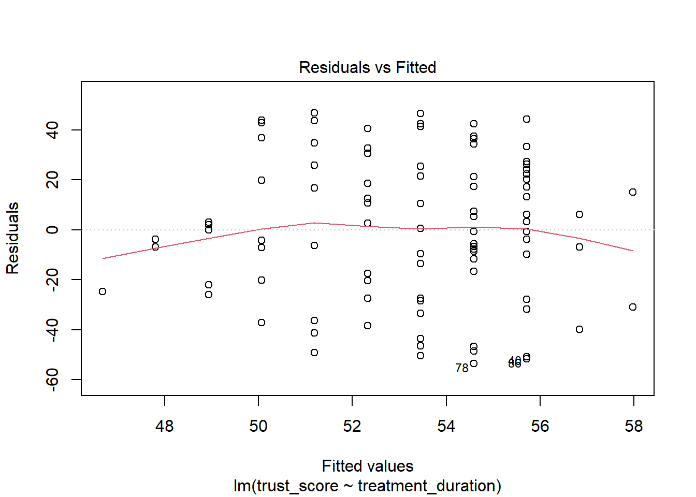
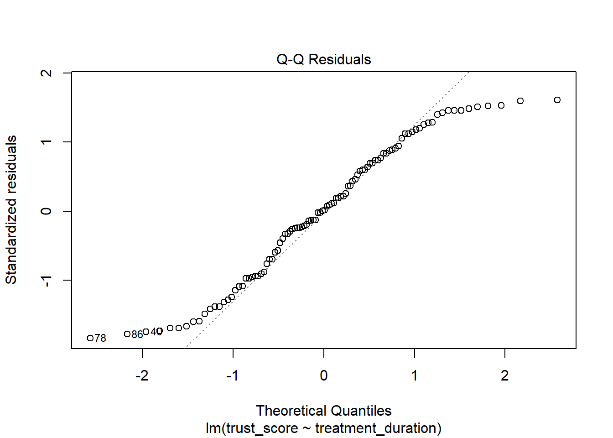
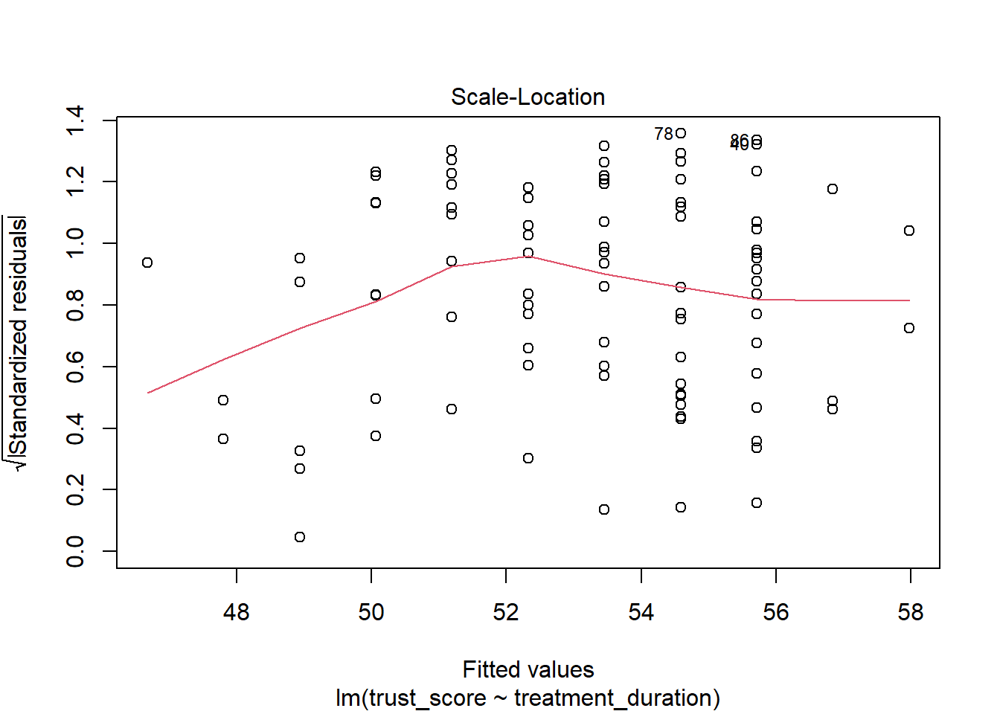
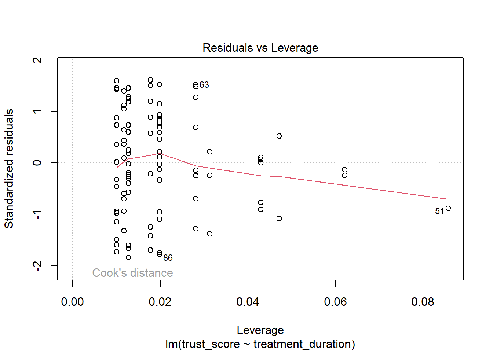

Regression analysis is a statistical technique used to model the relationship between an outcome (dependent) variable and one or more predictor (criterion/independent) variables. The goal of regression analysis is to understand how the outcome variable changes as the predictor variable changes.
When we say simple regression, we mean that there is only one predictor variable. This is to distinguish from multiple regression, where there are two or more predictor variables.
Regression does not imply causation
Regression analysis can show that two variables are related, but it does not prove that one variable causes the other. To establish causation, you need a research design that can rule out alternative explanations, i.e., an experiment.
9 Simple regression in R
In R, we can conduct a simple regression analysis using the lm() function. The lm() function stands for linear model and is used to fit linear models. The syntax for the lm() function is:
lm(y ~ x, data)
Where y is the outcome variable, x is the predictor variable, and data is the dataset containing the variables.
Let’s conduct a simple regression analysis using the lm() function in R. We will use the regression_data dataset, which contains trust_score as the outcome variable and treatment_duration as the predictor variable.
# Fit a simple regression model1regression_model <-lm(trust_score ~ treatment_duration, data = regression_data)
1
We fit a simple regression model using the lm() function. The outcome variable is trust_score, and the predictor variable is treatment_duration. The data are specified using the data argument.
What is the model?
The terms model or fit, are commonly used in regression analysis.
Model refers to the variables that you included in the model as well as the relationship between them. For example, our model above includes the predictor variable depression and the outcome variable avoidance. The model is the relationship between these variables. In this case, we are saying that avoidance is predicted by depression.
A different model would be one that included different predictor variables. For example, we could have a model that included the predictor variable treatment and the outcome variable avoidance, or model that includes both depression and treatment as predictor variables and avoidance as the outcome variable.
Fit refers to the idea that we want to know if this model is a good fit for the data. In other words, does the model explain the data well?
We might find that our first model is not a good fit for the data. In this case, we might try a different model. We will learn next week how to compare different models to see which one is the best fit for the data.
9.1 Checking model assumptions
Before interpreting the results of a regression analysis, it is essential to check the assumptions of the model. The key assumptions of linear regression are:
Linearity: The relationship between the predictor and outcome variables is linear.
Independence: The residuals (errors) are independent of each other.
Homoscedasticity: The residuals have constant variance.
Normality: The residuals are normally distributed.
We can check these assumptions using diagnostic plots. The plot() function in R can be used to create diagnostic plots for the regression model.
We create diagnostic plots for the regression model using the plot() function. The diagnostic plots include a scatterplot of the residuals against the fitted values, a Q-Q plot of the residuals, a scale-location plot, and a plot of the residuals against the predictor variable.




9.2 Check the assumptions
We can check the assumptions of linear regression using the plot() function.
The plot() function is used to create a plot of the model. It actually shows several plots in sequence.
When you run the plot function, there will be a message in the console that says “Hit to see next plot:”. You need to press enter to move through the plots.
9.2.1 The assumption of independence
This assumption is the idea that each observation is independent of the others. In other words, the value of one observation (e.g. a participant’s score) should not be related to the value of another participant’s score. This is not interpreted from the plots, but is an assumption that should be considered when collecting data. For example, you would not use this approach to analyse data from a repeated measures design, because the observations are not independent.
9.2.2 The assumption of linearity
The first plot is a plot of the residuals against the fitted values. This plot is used to check the assumption of linearity. The assumption of linearity states that the relationship between the predictor variable and the outcome variable is linear. In other words, the relationship between the predictor variable and the outcome variable can be described by a straight line. If the relationship is not linear, then the model is not a good fit for the data.
Linear and non-linear data
Linear and non-linear residuals
Good: Random scatter around the line. The line is straight.
Bad: Non-random scatter around the line. The line is not straight.
What do we do if this assumption is violated?: Linearity is a very important assumption. If the assumption is violated, then the linear model is likely not a good fit for the data. In this case we should probably try a different model. Data are never perfect, but we shouldn’t ignore a clear violation of linearity.
9.2.3 The assumption of normality
The second plot is a normal Q-Q plot of the residuals. This plot is used to check the assumption of normality. The assumption of normality states that the residuals are normally distributed. If the residuals are not normally distributed, then the model is not a good fit for the data.
qqplot of residuals
Normal and non-normal residuals
Good: The points follow the line.
Bad: The points do not follow the line.
What do we do if this assumption is violated?: Normality affects the accuracy of beta values, significance tests and confidence intervals. However, it is most important with small sample sizes. As sample size increases, the assumption of normality becomes less important.
9.2.4 The assumption of homoscedasticity
The third plot is a scale-location plot of the residuals against the fitted values. This plot is used to check the assumption of homoscedasticity. The assumption of homoscedasticity states that the residuals have equal variance. If the residuals do not have equal variance, then the model is not a good fit for the data.
homoscedasticity
Homoscedastic and heteroscedastic residuals
Good: The points are randomly scattered around the line. and the line is horizontal.
Bad: The points are not randomly scattered around the line. and the line is not horizontal.
What do we do if this assumption is violated?: This will affect the accuracy of the beta values, significance tests and confidence intervals. Essentially, it means that conclusions we draw from the model are less accurate. What we do depends on the situation. Transformation of the DV (e.g. log transformation) might help. If not, there are weighted regression models that can be used.
9.2.5 Checking for outliers or influential cases
The fourth plot is a plot of Cook’s distance. This plot is used to check for outliers. An outlier is a data point that is very different from the rest of the data. If there are outliers, then they could be affecting the regression model. The threshold for Cook’s distance is 1. If a data point has a Cook’s distance greater than 1, then it is considered an outlier.
The fifth plot is a plot of the residuals against the leverage. The sixth plot is a plot of the Cook’s distance against the leverage. They are pretty much the same plots as the plot 4.
Influential Cases and Leverage
On the plot above, Cook’s Distance is indicated by a red line. If a data point is outside the red line, then it is considered an outlier.
Leverage is the idea that a particular outlier might have a lot of influence on the regression model. Look for data points that are outside the red line on the top right or bottom right of the plot. These are data points that have a lot of leverage and might be influencing the regression model.
Outliers and influential cases
Good: No data points outside the red lines.
Bad: Data points outside the red lines. Outliers with high leverage.
What do we do if this assumption is violated?: Outliers will affect the calculation of variances (e.g. sum of squares or standard deviation) that are used in many calculations related to the regression model. If there are influentual cases, we should consider removing them from the analysis. When doing so, it is important to explain why you removed them, and be transparent about how this affected the model results.
9.3 Interpret the regression model results
To view the results of the regression model, we use the summary() function.
We view the results of the regression model using the summary() function. The output includes the coefficients, standard errors, t-values, p-values, and R-squared value of the model.
Call:
lm(formula = trust_score ~ treatment_duration, data = regression_data)
Residuals:
Min 1Q Median 3Q Max
-53.585 -24.991 0.304 24.285 46.804
Coefficients:
Estimate Std. Error t value Pr(>|t|)
(Intercept) 64.754 14.176 4.568 1.44e-05 ***
treatment_duration -1.130 1.371 -0.824 0.412
---
Signif. codes: 0 '***' 0.001 '**' 0.01 '*' 0.05 '.' 0.1 ' ' 1
Residual standard error: 29.29 on 98 degrees of freedom
Multiple R-squared: 0.006886, Adjusted R-squared: -0.003248
F-statistic: 0.6795 on 1 and 98 DF, p-value: 0.4118
9.3.1Call: The regression formula
The first line of the output is the regression formula. This is the formula that was used to create the model.
9.3.2Residuals: The residuals
The second line of the output is the residuals. The residuals are the difference between the actual values of the outcome variable and the predicted values of the outcome variable. This section is giving us some summary statistics about the residuals. However, we usually check the assumptions using the plots.
9.3.3Coefficients: The beta values
The third section of the output is the coefficients. You will see a line of values for the intercept and another line for each of the predictor variables in the model. Estimate is the beta value. Std. Error is the standard error of the beta value. Pr(>|t|) is the p value for the beta value.
Intercept: We are not usually interested in this line by itself. It is the value of the outcome variable when all of the predictor variables are equal to zero. In this case, it is the value of avoidance when depression is equal to zero. However, it might be the case that depression cannot be equal to zero. In this case, the intercept would not be meaningful. If the predictor were a categorical variable, then the intercept would be the value of the outcome variable when the predictor variable is equal to the reference category (i.e. The mean of the outcome for that group).
Depression: This is the beta value for depression. It is the amount that avoidance changes when depression increases by one unit. What unit means, depends on how the variables were measured, so it is likely to mean one point in the scale used to measure depression, for example.
The final section in the output shows:
Residual standard error. This is the standard deviation of the residuals. It is the average amount that the actual values of the outcome variable differ from the predicted values of the outcome variable.
Multiple R-squared. This is the R-squared value. It is the amount of variance in the outcome variable that is explained by the model. We usually talk about this as a percentage value.
Adjusted R-squared. This is the adjusted R-squared value. It is the amount of variance in the outcome variable that is explained by the model, adjusted for the number of predictor variables in the model. This is to account for the fact that having more predictors in the model will always increase the R-squared value, even if the predictors are not related to the outcome variable. It is relevant when we have more than one predictor variable in the model.
F Statistic. The F value comes from the ANOVA that is used to test the significance of the model. It tests the null hypothesis that all of the beta values are equal to zero.
p-value. This is the p value for the F statistic (the significance of the overall regression model, with all of the predictors).
9.4 Regression with a categorical predictor variable
So far, we have conducted a regression analysis with a continuous predictor variable. Now, let’s consider a regression analysis with a categorical predictor variable.
Our next hypothesis is that the level of depression is different for each treatment group. We can test this hypothesis using a regression model with a categorical predictor variable. Let’s conduct a regression analysis with the treatment variable as the predictor variable. If there are 2 levels of the predictor variable, then the model will compare the two levels. If there are more than 2 levels, then the model will compare each level to the reference level. By default, R uses the first level of the predictor variable as the reference level. Howeverm you can specify a different reference level using the relevel() function.
# specify the reference level - this is more useful when we have more than 2 levels0regression_data$treatment_group <-as.factor(regression_data$treatment_group)1regression_data$treatment <-relevel(regression_data$treatment_group, ref ="therapy1")# Fit a regression model with a categorical predictor variable2regression_model2 <-lm(aggression_level ~ treatment_group, data = regression_data)# Summary of the model3summary(regression_model2)
0
We convert the treatment variable to a factor variable using the as.factor() function. This is necessary for R to recognize the variable as a categorical variable.
1
We specify the reference level for the treatment variable using the relevel() function. In this case, we set the reference level to “therapy1”. This is likely the default level, but we are specifying it here for clarity. If we had more than 2 levels, we could specify a different reference level using the ref argument. For example, `ref = “control”
2
We fit a regression model with the treatment_group variable as the predictor variable. The outcome variable is aggression_level. The data are specified using the data argument.
3
We view the results of the regression model using the summary() function. The output includes the coefficients, standard errors, t-values, p-values, and R-squared value of the model.
Call:
lm(formula = aggression_level ~ treatment_group, data = regression_data)
Residuals:
Min 1Q Median 3Q Max
-4.6800 -1.4882 -0.0185 1.3460 4.4131
Coefficients:
Estimate Std. Error t value Pr(>|t|)
(Intercept) 4.6800 0.2843 16.464 < 2e-16 ***
treatment_grouptherapy2 1.3201 0.4103 3.217 0.00175 **
---
Signif. codes: 0 '***' 0.001 '**' 0.01 '*' 0.05 '.' 0.1 ' ' 1
Residual standard error: 2.05 on 98 degrees of freedom
Multiple R-squared: 0.09554, Adjusted R-squared: 0.08631
F-statistic: 10.35 on 1 and 98 DF, p-value: 0.001753
The output tells us that the model is significant, and that the beta values for the treatment_group therapy2 is different from the reference group (therapy1) which is the intercept of this model. The beta values are the difference in the outcome variable between the reference group and the other groups. The beta value for the reference group is the mean of the outcome variable (aggression_level) for that group. The beta values for therapy2 is the difference in the mean outcome variable for that group and the reference group.
Interpreting the results of a regression model with a categorical predictor variable
When we have a categorical predictor variable, the interpretation of the beta values changes. The beta values are the difference in the outcome variable between the reference category and the other categories. The reference category is the category that is not included in the model. The beta value for the reference category is the mean of the outcome variable for that category. The beta values for the other categories are the difference in the outcome variable between that category and the reference category.
If you want to see this done another way, if your predictor has 2 levels, you can conduct a t-test and compare the means of the two groups. The t-test will give you the same results as the regression model. The t-test is a simpler way to compare the means of two groups, but the regression model is more flexible and can handle more complex models (by adding more predictor variables).
Testing assumptions with a categorical predictor variable
When we have a categorical predictor variable, we need to be careful about how we interpret the assumptions of linear regression. The assumptions of linearity, normality and homoscedasticity are still relevant. However, because we have a categorical predictor, the plots will look different. We need to check the assumptions for each level of the categorical predictor variable. Some of the plots will change to reflect this.
9.5 Comparing multiple levels of predictor variables (estimated marginal means)
If we have more than 2 levels of the predictor variable, we can compare each level to the reference level. We can also compare all levels to each other using the emmeans package. The emmeans package provides estimated marginal means for the levels of a predictor variable. We can use the emmeans() function to calculate the estimated marginal means for the levels of the predictor variable.
For this example, let’s use the mtcar dataset, which contains information about cars. We will conduct a regression analysis with the cyl variable as the predictor variable and the mpg variable as the outcome variable. The cyl variable has 3 levels (4, 6, and 8 cylinders). We will compare the mean mpg for each level of the cyl variable.
# Load the mtcars datasetdata(mtcars)# Convert the cyl variable to a factor variablemtcars$cyl <-as.factor(mtcars$cyl)# Fit a regression model with the cyl variable as the predictor variableregression_model3 <-lm(mpg ~ cyl, data = mtcars)# Summary of the modelsummary(regression_model3)# Compare the levels of the predictor variable with pairwise comparisonslibrary(emmeans)
3
We use the emmeans() function from the emmeans package to calculate the estimated marginal means for the levels of the cyl variable. The pairwise ~ cyl argument specifies that we want to compare the levels of the cyl variable with pairwise comparisons.
Welcome to emmeans.
Caution: You lose important information if you filter this package's results.
See '? untidy'
Call:
lm(formula = mpg ~ cyl, data = mtcars)
Residuals:
Min 1Q Median 3Q Max
-5.2636 -1.8357 0.0286 1.3893 7.2364
Coefficients:
Estimate Std. Error t value Pr(>|t|)
(Intercept) 26.6636 0.9718 27.437 < 2e-16 ***
cyl6 -6.9208 1.5583 -4.441 0.000119 ***
cyl8 -11.5636 1.2986 -8.905 8.57e-10 ***
---
Signif. codes: 0 '***' 0.001 '**' 0.01 '*' 0.05 '.' 0.1 ' ' 1
Residual standard error: 3.223 on 29 degrees of freedom
Multiple R-squared: 0.7325, Adjusted R-squared: 0.714
F-statistic: 39.7 on 2 and 29 DF, p-value: 4.979e-09
$emmeans
cyl emmean SE df lower.CL upper.CL
4 26.7 0.972 29 24.7 28.7
6 19.7 1.220 29 17.3 22.2
8 15.1 0.861 29 13.3 16.9
Confidence level used: 0.95
$contrasts
contrast estimate SE df t.ratio p.value
cyl4 - cyl6 6.92 1.56 29 4.441 0.0003
cyl4 - cyl8 11.56 1.30 29 8.905 <.0001
cyl6 - cyl8 4.64 1.49 29 3.112 0.0112
P value adjustment: tukey method for comparing a family of 3 estimates
The output tells us that the mean mpg for the 4-cylinder cars is significantly different from the mean mpg for the 6-cylinder cars and the 8-cylinder cars. The mean mpg for the 6-cylinder cars is also significantly different from the mean mpg for the 8-cylinder cars. The estimated marginal means provide a way to compare the levels of the predictor variable and determine if there are significant differences between them.
What are estimated marginal means?
Estimated marginal means are the predicted means of the outcome variable for each level of the predictor variable. They are calculated by averaging the predicted values of the outcome variable for each level of the predictor variable, while holding all other variables constant. Estimated marginal means provide a way to compare the levels of the predictor variable and determine if there are significant differences between them.
9.5.1 What is the difference between estimated marginal means and actual means - how should I report them?
Estimated marginal means are the predicted means of the outcome variable for each level of the predictor variable. They are calculated by averaging the predicted values of the outcome variable for each level of the predictor variable, while holding all other variables constant. Actual means are the observed means of the outcome variable for each level of the predictor variable. The difference between estimated marginal means and actual means is that estimated marginal means are based on the regression model, while actual means are based on the observed data. This allows the estimated marginal means to take into account other variables in the model, for example.
When reporting the results of a regression analysis, it is common to report the estimated marginal means rather than the actual means. This is because the estimated marginal means take into account the effects of other variables in the model, while the actual means do not. Reporting the estimated marginal means can give a more accurate representation of the relationship between the predictor variable and the outcome variable.
9.5.2 What are Tukey corrected p-values?
Tukey corrected p-values are used to adjust for multiple comparisons in a pairwise comparison analysis. When conducting multiple comparisons between the levels of a predictor variable, there is an increased risk of making a Type I error (false positive) due to the number of comparisons being made. Tukey corrected p-values adjust for this increased risk. This means that the p-values are adjusted to account for the number of comparisons being made, reducing the likelihood of making a false positive conclusion.